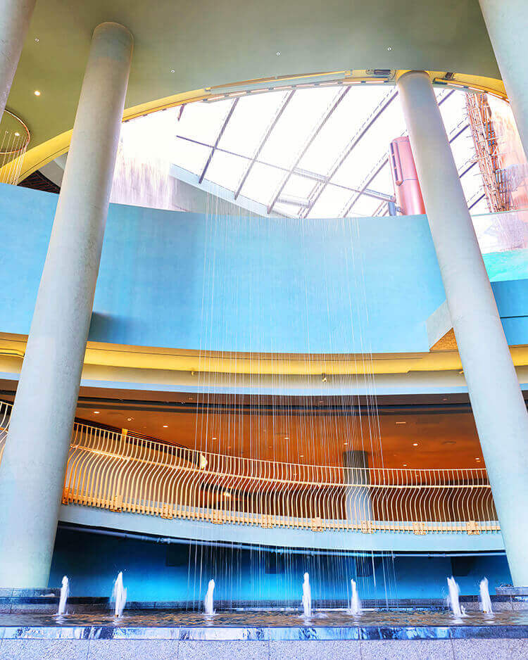
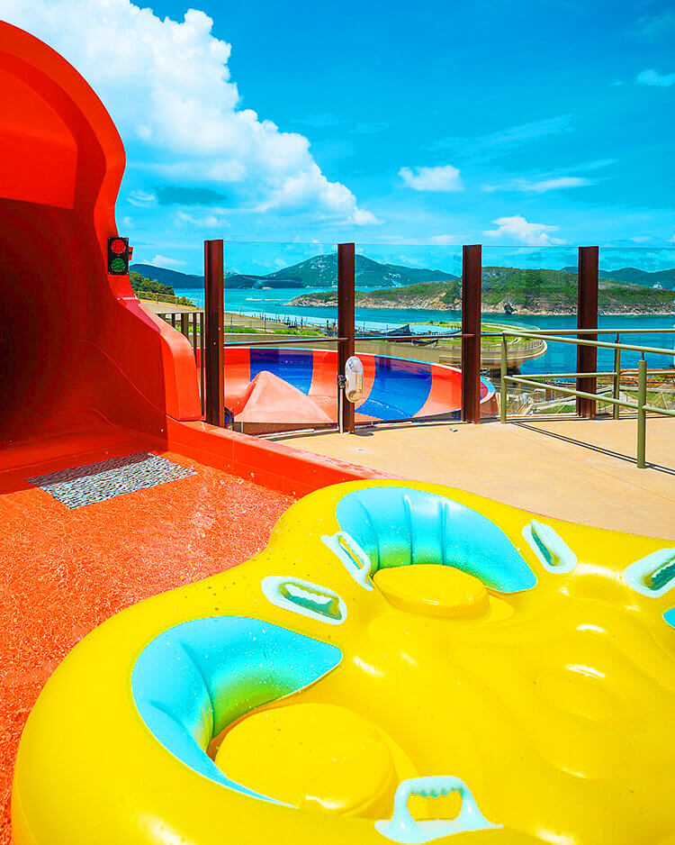
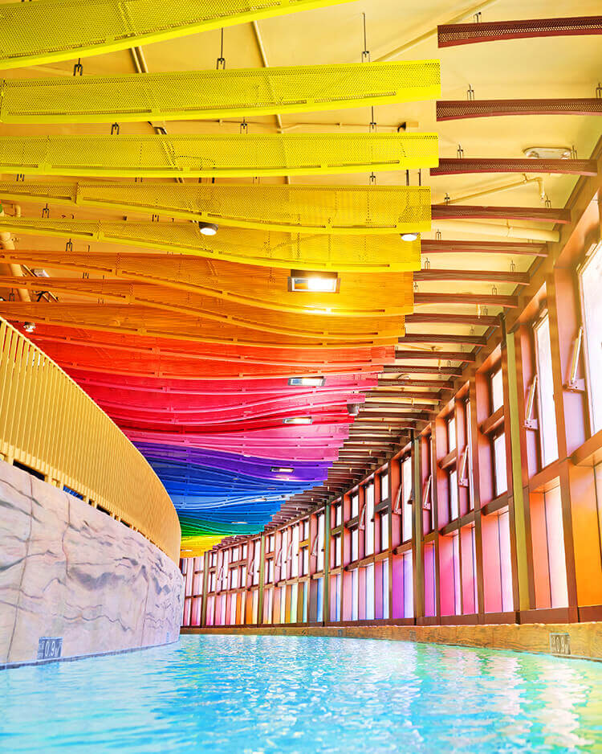
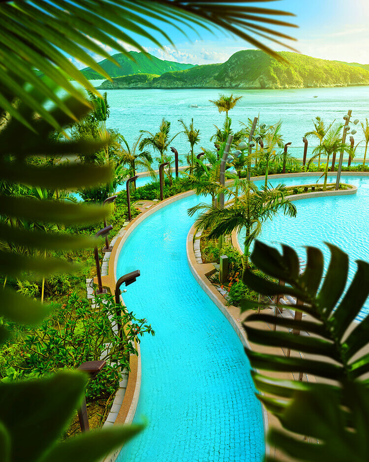
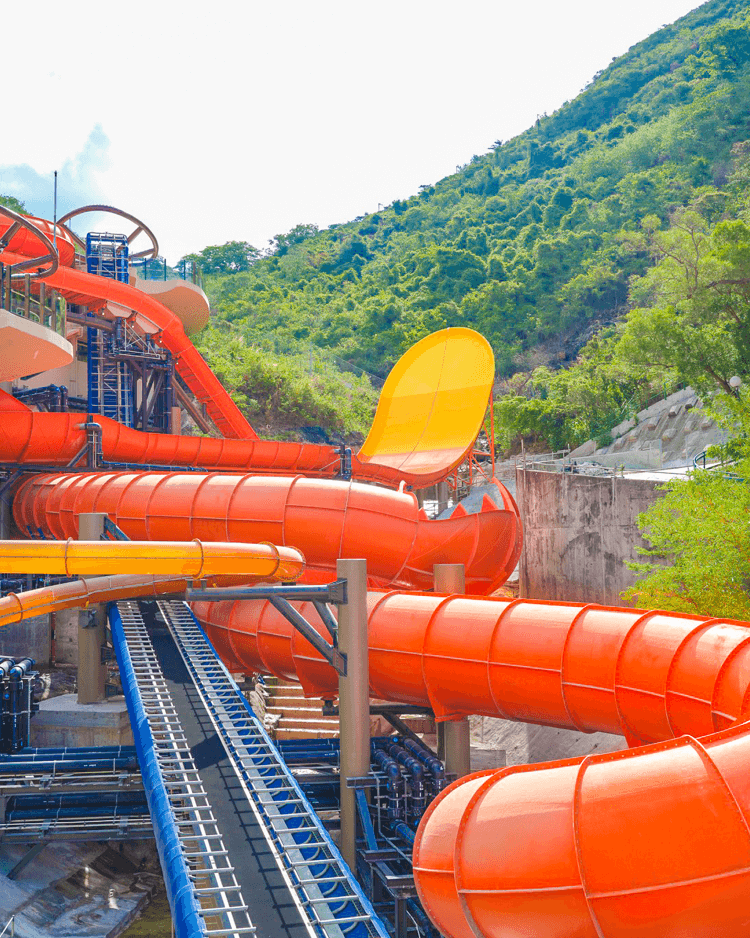

Welcome, Adventurers, to a secret world! Just minutes from the urban center, prepare to enter a mystical, hidden civilisation at one with the wonders of water and nature.
We look forward to hosting you in our secret world of water.
Join us as we all splash into adventure!
Asia's First all-weather, year-round seaside water park
Set where lush mountains meet the South China Sea, Ocean Park's Water World transports you into a year-round, all weather wonderland. Immerse youself in the thrill and excitement of the waves, rivers and slippery slides. Gain a new appreciation for nature and the magical world around you. Rejuvenate your spirit with every splash and build deep and meaningful connections with friends and family.
Quench your thirst for adventure on nine state-of-the-art water slides.
Discover 5 zones each filled with its own unique spirit of fun and adventure.

Your journey into our secret world of fun and adventure begins at Splendid Reef, an expansive area right on the shore of the sea. Take a walk along the seafront and enjoy the ocean air or dive right into all the thrills and excitement of Water World! Stroll down Water World Plaza where our Guides will greet you with a smile and prepare you for the fun that awaits. Get into the spirit by beginning to decode the secret language of nature. Like the symbol for Splendid Reef, a combination of ‘fish’ and ‘grass’ which sums up this coral wonderland!

What better way to express the joys of Torrential River than a combination of our symbols for ‘fun’ and ‘water? Come feel the rush of this exciting area of twists and turns in our secret world of water. Get turned around on the thrilling Cyclone Spin and Tropical Twist. Grab a mat and compete on Rainbow Rush. Go for the ultimate on Cavern Chase and Vortex! gaining admiration for the effort with family and friends together on a giant raft and laugh your way down to Hidden Village.

Adventurers follow the murmur of distant screams of joy and excitement to Hidden Village. The secret symbols for ‘people’ and ’mountains’ reveal this civilisation deep within the cavern of our secret world. Water flows in from all directions to create opportunities for everyone to enjoy fun adventures. Let our Guides teach you the art of surfing. Splash about Horizon Cove. Let the kids explore the joys of Whiskers’ Splash. Or take a Lazy Cruise through this Hidden Village within our secret world.

Experience the precious power of the ocean at Adventure Coast. Our world’s secret symbols for ‘water’ and ‘trees’ embody this hidden oasis. Adventure Coast is a tropical paradise where you’ll enjoy the sun and catch some surf in Big Wave Bay. Up the action with run down Riptide river and try to catch all the hidden symbols along the way. Or just take a break from all the fun with a rest in a cabana and a bite from Big Wave Snacks.

Set high atop the mountain overlooking the valley and sea below, this thrilling land attracts our most daring adventurers. The climb to excitement begins as you encounter the secret symbols of ‘energy’ and water’ combining to signal Thrill Valley. Having reached the summit, test your will with freefalls from Bravery Cliffs and Daredevil Drop, spectacular twists along Thunder Loop and side-winding splashes down Skyhigh Falls to the Hidden Village.